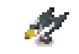
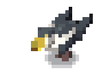
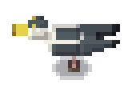
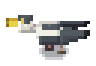

Old Cliff Gull
Old Cliff Gull is a creature of Port Ossery (level 17–19).
Old Cliff Gull is a creature of Port Ossery (level 17–19).
In the game
In the game the Old Cliff Gull is level 17–19, normal. It is found in The Thrift Cliffs. It can drop Deckhand's Belt (1%), Net-Hauler's Gloves (1%), Tarred Bracers (1%), Wharf Boots (1%) and rarely one of 8 rare items.
Quests
Quests that ask for it: The Old Gulls of the Point (behind the level cap).
Gallery







